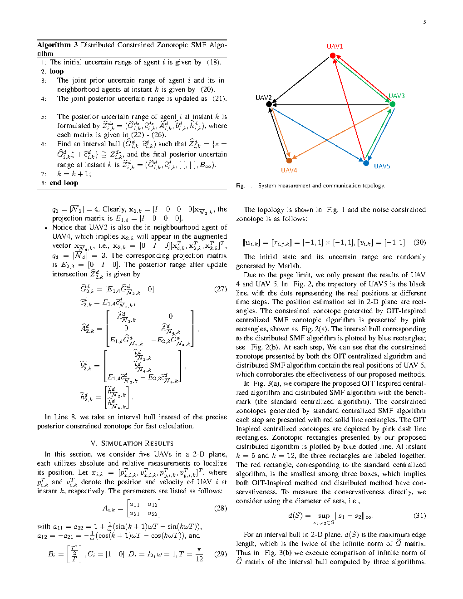
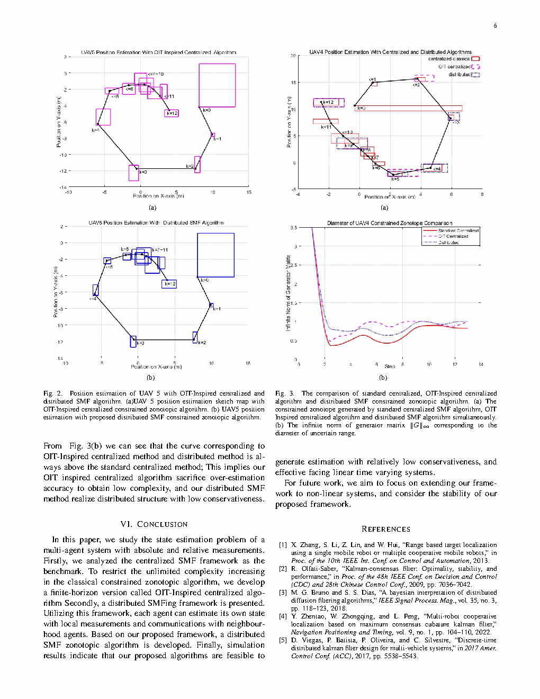

| Title | Set-Membership Filtering-Based Cooperative State Estimation for Multi-Agent Systems（基于集员滤波的多智能体系统协同状态估计） |
| Authors | Yu Ding（丁宇）、Yirui Cong（丛一睿，corresponding）、Xiangke Wang（王祥科） |
| Affiliation | 国防科技大学（National University of Defense Technology, NUDT），智能科学学院 |
| Venue | CCC 2023（第42届中国控制会议），2023年5月，pp. 5791–5796 |
| DOI / Links | arXiv: 2305.10366v1 | Submitted: 2023-05-17 | IEEE Xplore |
| TL;DR | 提出了一种基于集员滤波（Set-Membership Filtering, SMF）的多智能体系统协同状态估计框架。核心贡献：（1）以集中式 SMF作为分布式方案的性能基准（benchmark）；（2）提出OIT-inspired 有限时域集中式 constrained zonotope 算法（Algorithm 1）以控制计算复杂度；（3）建立分布式 SMF 框架及对应的分布式 constrained zonotope 算法（Algorithm 2），使得每个智能体仅用本地测量和邻居通信即可获得包含真实状态的有界集合估计。严格集合分析表明：分布式 SMF 本质上是对集中式 SMF 结果在相应子空间上投影的外包络（outer-bound）。 |
| Inspiration Source | → What Insight It Inspired | Type |
|---|---|---|
| 集中式 SMF 的完备信息结构（融合所有测量的理想情况） | → 以集中式结果作为性能上界（information-theoretic upper bound），统一度量任何分布式方案的信息损失。这为分布式估计提供了"天花板"——任何声称性能好的分布式算法都必须接近这个基准 | 架构 |
| OIT（Ordered Intersection of Tubes）的有限时域思想（Cong et al. 的 prior work） | → 将 OIT 从标准 zonotope 推广到 constrained zonotope，在滑动窗口 $[k-\bar{\delta}, k]$ 内进行递归估计。时间窗长度 $\bar{\delta}$ 取系统可观测性指数 $\mu_0$——恰好是"能唯一确定状态所需的最短时间"——这是信息论最优的窗口选择 | 方法 |
| 集合投影与边缘化（marginalization）的集合论关系 | → 揭示分布式 SMF 与集中式 SMF 之间的精确集合论关系：分布式结果 = 集中式联合集合在局部坐标上的投影后再外包。这个外包（outer-bound）就是信息损失——为不同通信拓扑下的保守性提供了可量化分析框架 | 数学 / 理论 |
| Constrained Zonotope 的高精度集合表达（Scott et al. 2016） | → 相比普通 zonotope，constrained zonotope 通过附加等式约束 $A\xi = b$ 能更紧致地表达非中心对称的集合（如测量更新后的后验集），在相同复杂度下提供更高精度——这对有界误差下有保证估计至关重要 | 表示 |
flowchart TB
subgraph MODEL["多智能体系统模型"]
AGENT["N个智能体 · 各含独立动力学 x_{i,k+1}=A_i x_{i,k}+B_i w_{i,k}"]
ABS["绝对测量: y_{i,k}^a = C_i x_{i,k} + v_{i,k}^a"]
REL["相对测量: y_{ij,k}^r = D_{ij} (x_{i,k} - x_{j,k}) + v_{ij,k}^r"]
BOUNDS["有界噪声: w∈W, v∈V (集合形式)"]
end
subgraph CENTRAL["集中式 SMF (Benchmark · 性能上界)"]
AUG["增广状态: x_k=[x_1^⊤,...,x_N^⊤]^⊤"]
ACMAT["增广矩阵: A_c=diag{A_i} · C_c=diag{C_i}"]
HCMAT["增广测量矩阵: H_c=[C_c^⊤ D_c^⊤]^⊤"]
OIT["OIT-inspired 有限时域 SMF · 窗长δ̄≥μ₀ · Algorithm 1"]
CENRES["输出: 联合不确定集合 [[x_k]]_{cent}"]
end
subgraph DIST["分布式 SMF (实际方案 · Algorithm 2)"]
LOCAL["每个智能体 i 维护: 本地 zonotope X_{i,k}"]
PRED["Prediction: X_{i,k}^{pred}=A_i·X_{i,k-1}⊕B_i·W_{i,k-1}"]
UPDATE["Update: X_{i,k}=X_{i,k}^{pred} ∩ Y_{i,k}^{abs} ∩ ⋂_{j∈N_i} Y_{ij,k}^{rel}"]
COMM["通信: 与邻居交换相对测量约束"]
DISTRES["输出: 各智能体局部不确定集合 X_{i,k}^{dist}"]
end
subgraph THEORY["理论保证"]
TH1["严格集合关系: [[x_k]]_{cent} ⊆ [[x_k]]_{dist} (联合集)"]
TH2["分布式=集中式投影+外包络 · 信息损失可量化"]
TH3["邻居越多→外包络越紧 · 收敛到集中式"]
end
MODEL --> CENTRAL
MODEL --> DIST
CENTRAL --> THEORY
DIST --> THEORY
CENRES -.->|"上界: 最优可达精度"| DISTRES
DISTRES -.->|"下界逼近: 实际可达精度"| CENRES
classDef model fill:#fef7ed,stroke:#f59e0b,stroke-width:2px,color:#92400e
classDef cent fill:#e8f0fe,stroke:#3b82f6,stroke-width:2px,color:#1d4ed8
classDef dist fill:#f0ebfd,stroke:#8b5cf6,stroke-width:2px,color:#6d28d9
classDef theory fill:#e6f7ee,stroke:#10b981,stroke-width:2px,color:#047857
class AGENT,ABS,REL,BOUNDS model
class AUG,ACMAT,HCMAT,OIT,CENRES cent
class LOCAL,PRED,UPDATE,COMM,DISTRES dist
class TH1,TH2,TH3 theory
flowchart TD
A["Algorithm 1 入口: 初始化 δ̄, μ₀"] --> B{"当前步数 k ≤ δ̄ ?"}
B -->|"是 · 初始阶段"| C["经典 Constrained Zonotope SMF · 全历史"]
B -->|"否 · 稳态阶段"| D["OIT-inspired 有限时域 SMF · 窗口 [k-δ̄, k]"]
C --> E["Prediction: 动力学传播 + Minkowski 加噪声"]
D --> F["有限时域 Prediction: 仅窗口内的状态传播"]
E --> G["Update: 与测量集合取交集 · 绝对+相对"]
F --> H["有限时域 Update: 窗口内所有测量同时约束"]
G --> I["集合降阶: order reduction 控制 zonotope 生成元数"]
H --> I
I --> J["输出: 包含真实状态的有保证 zonotope · 确定性保证"]
J --> K{"k ← k+1 · 继续 ?"}
K -->|"是"| B
K -->|"否"| L["结束"]
style A fill:#e8f0fe,stroke:#3b82f6,stroke-width:2px,color:#1d4ed8
style B fill:#fef7ed,stroke:#f59e0b,stroke-width:2px,color:#92400e
style C fill:#f0ebfd,stroke:#8b5cf6,stroke-width:2px,color:#6d28d9
style D fill:#e6f7ee,stroke:#10b981,stroke-width:2px,color:#047857
style J fill:#ffe4e6,stroke:#f43f5e,stroke-width:2px,color:#be123c
style L fill:#f3f4f6,stroke:#9ca3af,stroke-width:2px,color:#4b5563
| 类别 | 内容 | 维度 |
|---|---|---|
| 输入 | (a) 本地绝对测量序列 $\{y_{i,k}^a\}$；(b) 与邻居的相对测量序列 $\{y_{ij,k}^r\}_{j\in\mathcal{N}_i}$；(c) 邻居通信的集合 $\{\hat{X}_{j,k}\}_{j\in\mathcal{N}_i}$；(d) 动力学模型 $(A_i, B_i, \mathcal{W}_{i,k})$；(e) 测量模型 $(C_i, D_{ij}, \mathcal{V})$ | 连续时间步的测量流 + 模型先验 + 通信数据 |
| 输出 | 每个智能体 $i$ 的局部有保证状态估计集合 $\hat{X}_{i,k}$（constrained zonotope），满足 $x_{i,k} \in \hat{X}_{i,k}$ 对任意满足噪声边界的噪声实现均成立 | 每个智能体输出一个多维 zonotope |
| 目标 | 使分布式估计集合 $\hat{X}_{i,k}^{\text{dist}}$ 尽可能接近集中式基准 $\hat{X}_{i,k}^{\text{cent}}$（即最小化外包络保守性） | 集合体积 / 直径作为精度指标 |
这是一个带有理论保证的分布式状态估计问题——核心不是设计一个"可能比别的方法好"的启发式算法，而是建立一个严格的集合论框架：先定义集中式上界（信息充分的理想结果），再分析分布式方案到上界的距离（信息损失）。本质上是有界误差假设下的多智能体合作定位问题，与卡尔曼滤波（假设高斯噪声）形成对偶关系。应用场景：GPS 拒止环境下的 UAV 编队定位、水下 AUV 协同导航、传感器网络节点自定位。
⚠ 表头用英文，正文用中文
| Prior Method | Core Idea | Why It Fails / Insufficient |
|---|---|---|
| Distributed Kalman Filter（分布式卡尔曼滤波） | 假设噪声为高斯分布，通过协方差传播和一致性协议在邻居间交换均值和协方差 | 假设噪声是高斯分布——实际系统中（如 UAV 受风扰、UWB 测距有多径误差），噪声通常是有界的（±X）而不是高斯分布的。K 方法给的是统计置信区间（如 95%），不是确定性保证——意味着偶尔会给出错误估计而不会报警。 |
| Classical Set-Membership Filtering / Zonotopic SMF（经典 zonotope SMF） | 用 zonotope 包裹所有可能的噪声实现，通过 Minkowski 加法和集合交进行预测和更新 | zonotope 的生成元数量 随时间线性增长（每个预测步至少增加过程噪声的生成元），导致计算复杂度不可控。对多智能体场景，相对测量的"集合求交"操作尤为昂贵——因为它涉及两个不同智能体的 zonotope 之间的笛卡尔积求交。 |
| Consensus-based Distributed Estimation（一致性分布式估计） | 邻居间通过加权平均迭代收敛到全局一致值（如动态平均一致性） | 本质上是对点估计（如均值）的传播，不携带不确定性/置信集合信息。无法给出"这个估计在多大的范围内是可靠的？"这样的有保证回答。而且一致性迭代需要多轮通信，在实时性约束下不可行。 |
| Centralized Constrained Zonotope SMF（集中式 constrained zonotope SMF） | 所有测量汇聚到中心节点，在高维增广状态上运行 constrained zonotope SMF | 通信负担重（所有测量需上传），中心节点是单点故障，且高维 zonotope 操作的复杂度随 $N$ 指数级增长。不可分布式执行——违背了"每个智能体自主计算"的需求。 |
本文的方法论核心是"基准-分析-设计"三步范式：（1）构造一个信息充分的集中式方案作为基准（定义"天花板"）；（2）严格分析分布式方案与集中式方案之间的集合论关系（量化"距离天花板多近"）；（3）基于此关系设计分布式算法，使其尽可能逼近集中式基准。这种范式的优势在于——分布式方案不是 ad-hoc 设计，而是以集中式基准为"锚点"的理论驱动降级。
LaTeX rendered by MathJax. 显示公式用 $$...$$，行内公式用 $...$。⚠ 符号解释请用中文。
| 参数 | 取值 | 含义 | 为什么取这个值 |
|---|---|---|---|
| 滑动窗长 $\bar{\delta}$ | $\ge \mu_0$（可观测性指数） | 有限时域 SMF 的窗口长度 | $\mu_0$ 是能唯一确定状态所需的最短测量序列长度——小于它就信息不足，远大于它就浪费计算。取恰好 $\mu_0$ 是信息论最优 |
| 智能体数量 $N$ | 仿真中 4 个 | 多智能体系统的规模 | 4 智能体足以验证分布式 vs 集中式的差异，同时计算可控。框架本身适用于任意 $N$ |
| Zonotope 类型 | Constrained Zonotope | 集合表示的选择 | 标准 zonotope 只能表示中心对称凸多面体，但测量更新后的集合通常非中心对称。Constrained zonotope 的等式约束 $A\xi = b$ 可以精确描述这种不对称性 |
| 噪声模型 | 有界集合 $\mathcal{W}, \mathcal{V}$ | 不确定性描述方式 | 不假设概率分布——只要噪声不超出预设边界，估计保证 100% 成立。比高斯假设更符合实际工程需求（"误差不超过 ±0.1 m"） |
| 状态维数 | $n_i$（如 2D 平面 = 4 维含速度） | 每个智能体的状态空间维度 | 2D 平面定位中，状态通常包含位置 $[p_x, p_y]$ 和速度 $[v_x, v_y]$ = 4 维。增广后 $nN = 4 \times 4 = 16$ 维——集中式高维操作的计算负担是分布式设计的动机之一 |
理解本文需要掌握三个关键基础原理：Set-Membership Filtering 的确定性与概率性的区别、Constrained Zonotope 的集合表达能力、以及 OIT 方法的信息论原理。
SMF 的确定性保证在安全关键应用（UAV 编队防撞、自动驾驶感知）中至关重要——"95% 可靠"意味着每 20 次中有 1 次不可靠，这在安全关键场景下是不可接受的。SMF 的 zontope 集合绝对包含真实状态——如果集合发生碰撞，那么真实物体一定在碰撞路径上。
对本文最重要的工程价值：OIT 使得集中式 SMF 的复杂度从 $O(k \cdot n_g)$（随时间线性增长）降低到 $O(\bar{\delta} \cdot n_g)$（常数——不随时间增长），这是将 SMF 从"理论上优美"变成"工程上可行"的关键技术。如果没有 OIT，集中式 SMF 在运行数分钟后会因为 zonotope 过于复杂而无法实时计算。
📷 论文原图截图。图片保存至 figures/ 子目录。命名 fig1.png ~ fig2.png 即可自动显示。

📷 请将截图保存为figures/fig1.png本图展示了：论文考虑的典型多智能体协同估计场景。每个智能体（Agent i）拥有：（1）自身的绝对测量能力（如 GPS/IMU——自身绝对位置/速度的带噪声观测）；（2）与通信邻居的相对测量能力（如 UWB 测距/相对位置——到邻居智能体的距离或相对位姿的带噪声观测）；（3）与邻居的双向通信链路（交换各自的不确定集合 $X_{i,k}$）。

📷 请将截图保存为figures/fig2.png本图展示了：论文的核心实验结果——三种方案在多智能体 2D 平面定位任务中的性能对比。（a）无合作方案：每个智能体仅使用自己的绝对测量做 SMF——没有利用邻居的相对测量，估计集合最大（精度最差）。（b）分布式方案（Algorithm 2）：每个智能体使用本地测量 + 邻居相对测量通信——估计集合显著收缩，但比集中式集合略大（保守性）。（c）集中式方案（Algorithm 1，Benchmark）：所有测量汇聚处理——估计集合最紧致（理论最优，但通信负担最重）。
| 数据问题 | 潜在困难 | 严重程度 |
|---|---|---|
| 噪声边界设定过紧 | 如果预设噪声边界 $\mathcal{W}, \mathcal{V}$ 比实际噪声范围小 → 部分噪声实现会落在边界外 → SMF 的 zonotope 可能不包含真实状态 → 确定性保证失效。在安全关键场景中可能导致灾难性故障 | ★★★★★ |
| 通信丢包/延迟 | 智能体 $i$ 依赖与邻居 $j$ 的通信来获取 $X_{j,k}$。如果这条通信链路中断，相对测量 $y_{ij,k}^r$ 无法有效利用 → 退化到无合作水平。间歇性通信中断会导致 zonotope 膨胀/收缩的锯齿效应 | ★★★★ |
| 可观测性指数 $\mu_0$ 的估计 | OIT 窗长 $\bar{\delta}$ 基于 $\mu_0$ 选择。如果 $\mu_0$ 低估 → 有限时域信息不足 → 估计集合显著膨胀（甚至无界）。$\mu_0$ 依赖于 $A_c$ 和 $H_c$（含通信拓扑）——通信拓扑变化会改变 $\mu_0$ | ★★★★ |
| Zonotope 降阶操作的累积保守性 | 每次更新后需降阶以控制生成元数量——降阶操作（如用更少生成元外包当前 zonotope）会引入额外的保守性。长期运行中，这种保守性会逐步累积，导致估计集合越来越"胖" | ★★★ |
| 参考文献 | 为什么重要 |
|---|---|
| Scott, J.K. et al. (2016) — Constrained zonotopes: A new tool for set-based estimation and fault detection. Automatica 69, 126–136 | Constrained zonotope 的定义和操作（Minkowski 加、交集、降阶）的基础论文。理解本文所有 zonotope 操作的前提——如果你不知道如何对两个 constrained zonotope 求交，必须读这篇。 |
| Cong, Y. et al. — OIT-inspired constrained zonotopic SMF (prior work, ref [13] of this paper) | 本文 Algorithm 1 的直接先验工作——有限时域 OIT + constrained zonotope 的思想源自这篇。了解 prior work 才能理解本文的创新增量在哪。 |
| Ding, Y. et al. — Distributed Set-membership Filtering Frameworks For Multi-agent Systems With Absolute and Relative Measurements (companion paper, ref [20]) | 分布式 SMF 框架的更详细版本——本文 Algorithm 2 的理论基础。两篇一起读才能完整理解"集中式基准 → 分布式近似"的关系。 |
| Combastel, C. (2015) — Zonotopes and Kalman observers: Gain optimality under distinct uncertainty paradigms. Automatica 55, 265–273 | 建立了 zonotope 和 Kalman 滤波之间的对偶关系——如果你习惯了 KF 的思维，这篇能帮你顺利迁移到 SMF 的集合视角。 |